日历连接指南 ·
从连接日历
到完成首次同步。
先选择要导入日程的服务，再对照下方界面进行设置。
依次完成：连接账户 → 选择日历 → 执行同步 → 检查结果。
连接外部账户是可选操作。本地日历无需登录即可使用。
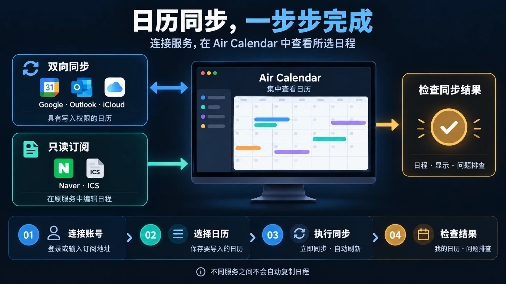
从这里开始
01. 打开设置界面
- 点击 Air Calendar 顶部的同步图标。
也可以依次选择菜单中的 系统 → 日历与同步（Calendars and sync）→ 日历、账户与同步（Calendars / accounts and synchronization）。打开的窗口标题是 日历管理（Calendar management）。
- 点击窗口上方的“连接与订阅”标签页。
窗口最初可能显示 我的日历（My calendars） 标签页。添加账户请从 连接与订阅（Connections and subscriptions） 开始。首先可看到 Google Calendar 和 通过地址订阅日历（Subscribe by address） 卡片。
- 点击所需服务的“连接账户”。
要找到 Outlook、iCloud、Naver、Yahoo、Zoho 或 Fastmail，请点击 添加其他账户（Connect another account） 旁的 展开服务列表（Show services），然后向下滚动。如果已经连接，按钮可能显示为 连接设置（Connection settings）、重新连接（Reconnect） 或 选择要导入的日历（Choose calendars to import） 等。
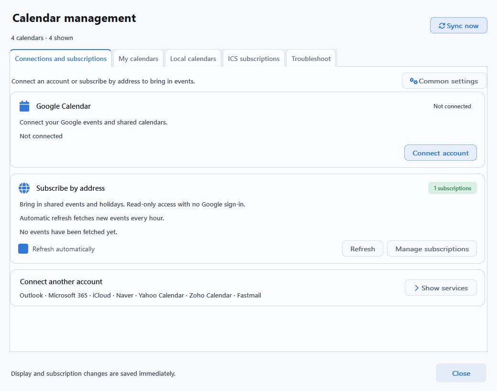
截图使用对应的应用语言和示例数据。账号名称、日历名称及连接状态因用户而异。点击图片可查看原始尺寸。当前应用中的部分新按钮仍显示英文，因此本指南同时注明实际显示的名称。
连接前的准备
02. 确认所用服务需要哪些资料
“双向同步”表示与对应服务互相同步日程变更，并不表示将 Google 日程自动复制到 Outlook。共享日历可能为只读，具体取决于原账户授予的写入权限。
| 要连接的服务 | 提前准备 | 日程编辑能力 |
|---|---|---|
| Google Calendar ↗ | Google 账户 + 桌面应用类型的 OAuth JSON 文件 | 有写入权限时支持双向同步 |
| Outlook · Microsoft 365 ↗ | Microsoft 账户 + 用于连接日历的客户端 ID | 有写入权限时支持双向同步 |
| iCloud ↗ | Apple 账户邮箱 + 应用专用密码 | 个人日程双向同步¹ |
| Naver ↗ | Naver ID + 认证密码 | 只读² |
| Yahoo · Zoho · Fastmail ↗ | 账户邮箱 + 对应服务要求的认证密码 | 个人日程双向同步¹ |
| ICS 订阅 ↗ | 服务提供的 iCal / ICS 订阅地址 | 只读 |
¹ CalDAV 的重复日程和邀请日程需在原服务中编辑。² Naver 是否允许 Windows 连接，可能受其服务政策限制。
仅在下文所示的应用文件选择框或密码输入框中填写，无需在本指南页面输入。请勿在论坛或截图中公开 JSON 文件、应用专用密码或私人 ICS 地址。
GOOGLE CALENDAR
连接 Google Calendar
当前应用使用您自行准备的 桌面应用类型 OAuth 凭证文件进行连接。首次使用时需在 Google Cloud 中创建文件，然后登录您希望在 Air Calendar 中使用的 Google 账户。
A. 首次设置：准备 Google 认证 JSON 文件
- 在 Google Cloud 中创建项目。
登录 Google Cloud 控制台。在顶部项目选择菜单中选择 新建项目，输入名称并创建，然后选中该项目。
- 启用 Google Calendar API。
在 API 和服务 → 库 中搜索 Google Calendar API，然后点击 启用（部分界面显示为 启用 API）。
- 在 Google Auth Platform 中配置同意屏幕。
打开 Google Auth Platform → 品牌信息（Branding）。首次配置时，点击 开始使用（Get started），填写应用名称（例如：我的 Air Calendar 连接）、支持邮箱和联系邮箱。个人 Gmail 账户的受众群体（Audience）应选择 外部（External）；组织内部账户请按管理员的政策选择。
- 确认测试用户和日历权限。
如果以测试状态使用外部应用，请在 受众群体（Audience）→ 测试用户（Test users）→ 添加用户 中填写实际要连接的 Google 邮箱并保存。在 数据访问权限（Data Access）→ 添加或移除范围 中选择 Google Calendar API 的
https://www.googleapis.com/auth/calendar范围并保存。 - 创建“桌面应用”客户端并下载 JSON 文件。
点击 客户端（Clients）→ 创建客户端（Create client）。应用类型选择 桌面应用（Desktop app），输入名称并创建。在生成的客户端中下载 JSON 文件，保存到电脑上方便查找的文件夹。网页应用类型的文件无法用于此设置。
Google 界面可能因账户和语言而异。Google 官方桌面应用认证准备指南 · 同意屏幕与测试用户指南。完成以上步骤无需安装 Python，也无需运行示例代码。
B. 在 Air Calendar 中连接并选择要导入的日历
- 点击 Google Calendar 卡片中的“连接账户”。
在打开的 Google 设置中选择 账户连接（Account connection）。展开 OAuth 文件与连接帮助（OAuth file and connection help），在 凭证文件 → 浏览 中选择刚下载的 OAuth JSON 文件。在首次设置的电脑上，这部分帮助可能已展开。
- 点击“连接 Google 账户”，在浏览器中授权。
选择要使用的 Google 账户，核对日历访问权限并授权。应用最多等待 3 分钟。授权完成后返回 Air Calendar，并确认登录的账户就是已添加的测试用户账户。
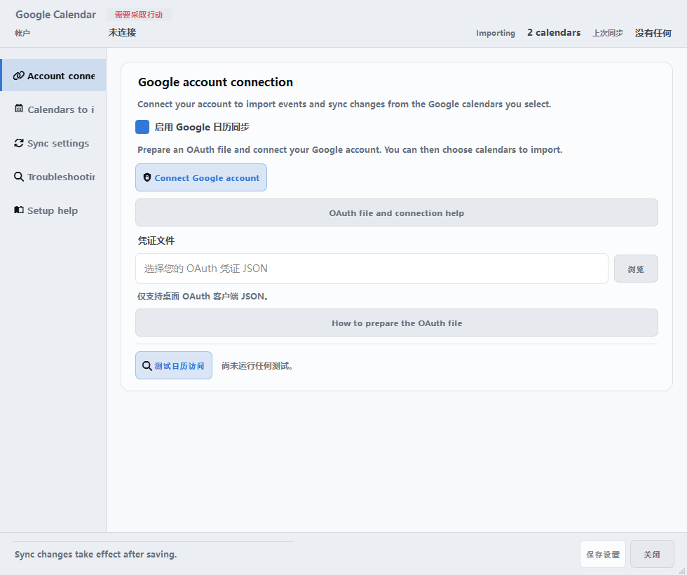
- 在“要导入的日历”中勾选“导入”。
连接成功后会进入此界面。只勾选需要使用的个人、工作或共享日历。如果看不到新建的日历，点击 刷新列表（Refresh list）。同时确认各项标注的 可编辑（Editable）/ 只读（Read-only） 权限。
- 点击下方的“保存设置”。
看到保存完成的提示后，点击 关闭。保存设置不会关闭窗口。如果在保存前关闭窗口，刚选择的导入项目不会生效。
- 返回日历管理，点击“立即同步”。
也可以点击服务卡片中的 刷新（Refresh），只刷新 Google。完成下文的同步与显示检查后，首次连接便设置好了。
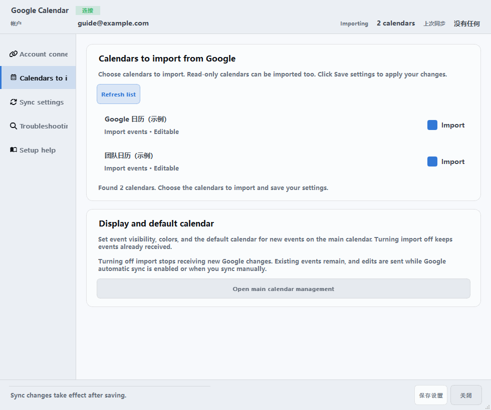
访问测试用于确认权限。是否实际下载了日程，请在同步后查看日历。Google 自动同步默认开启，默认定期间隔为 10 分钟，编辑后的快速同步间隔为 30 秒。
OUTLOOK · MICROSOFT 365
连接 Outlook
支持连接个人 Microsoft 账户以及工作或学校账户。当前连接方式需要一个用于连接日历的 Microsoft 应用客户端 ID。如果组织已提供 ID，可跳过准备步骤，直接从 B 部分开始。
A. 没有客户端 ID 时：由管理员或应用注册负责人准备
- 在 Microsoft Entra 中注册应用。
进入 Microsoft Entra 管理中心的 Entra ID → 应用注册 → 新注册。输入名称，将支持的账户类型设为 任何组织目录中的账户和个人 Microsoft 账户。如果没有应用注册权限，请联系组织管理员。
- 添加桌面应用登录地址。
在已注册应用的 身份验证 → 添加平台 → 移动和桌面应用程序 中，将
http://localhost添加为重定向 URI 并保存。 - 添加日历权限。
在 API 权限 → 添加权限 → Microsoft Graph → 委托的权限 中确认
Calendars.ReadWrite和User.Read。如果组织有要求，还需获得管理员同意。 - 复制“应用程序（客户端）ID”。
将应用 概述 页面中显示的 UUID 格式 ID 用于 Air Calendar。无需客户端密钥。
B. 在应用中登录并导入日程
- 在“连接与订阅”中展开其他服务列表。
点击 Outlook · Microsoft 365 → 连接账户。在打开的窗口中选择 1. 连接账户（1. Connect account） 标签页。
- 展开“应用注册与连接准备指南”，填写客户端 ID。
输入为日历连接准备的 应用程序（客户端）ID（Application (client) ID）。点击 Microsoft 登录（Sign in with Microsoft），在浏览器中完成登录和权限授权。工作或学校账户可能需要管理员批准或多重身份验证（MFA）。
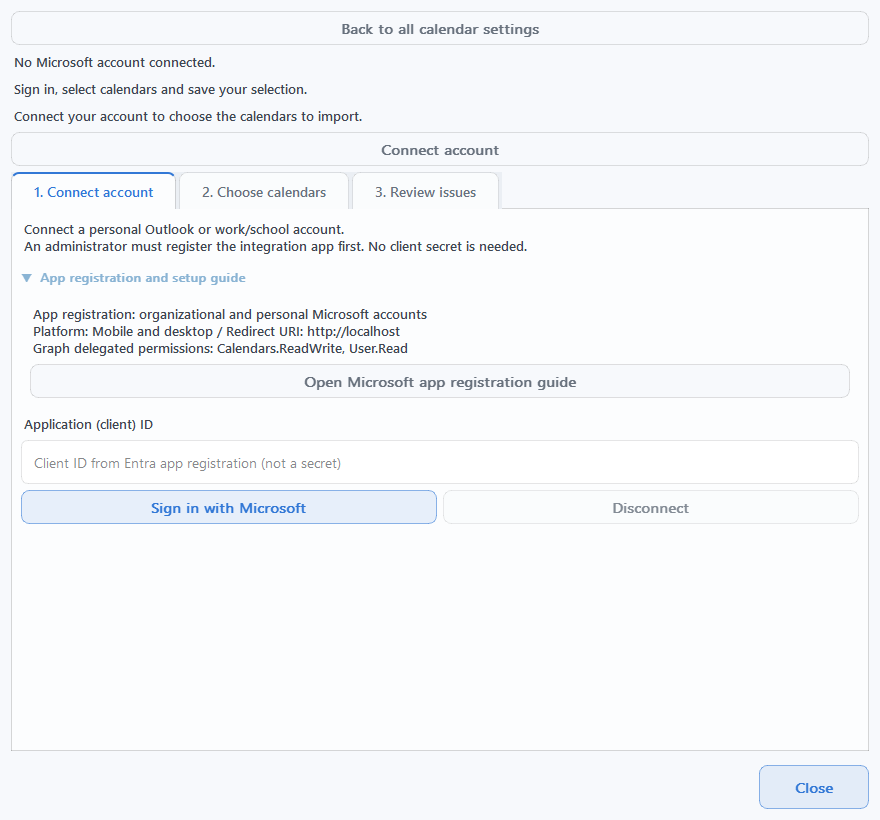
- 在“2. 选择日历”中勾选要导入的日历。
先点击 保存所选日历（Save calendar selection），再点击 立即同步（Sync now）。如果更改了选择但尚未保存，也可以点击 保存选择并同步（Save selection and sync），一次完成两项操作。
- 检查完成结果，再按需开启自动同步。
确认显示 同步完成及导入的项目数量。如果需要自动刷新，请在保存日历后勾选 每 5 分钟自动同步（Automatically synchronize every 5 minutes）。首次连接账户时，自动同步处于关闭状态。
当前 Outlook 会导入从今天起过去 120 天至未来 400 天的日程。不支持编辑完整的重复规则、回复邀请或将已连接的日程移至其他日历。这些操作请在 Outlook 原服务中完成。
查看 Outlook 日历选择界面
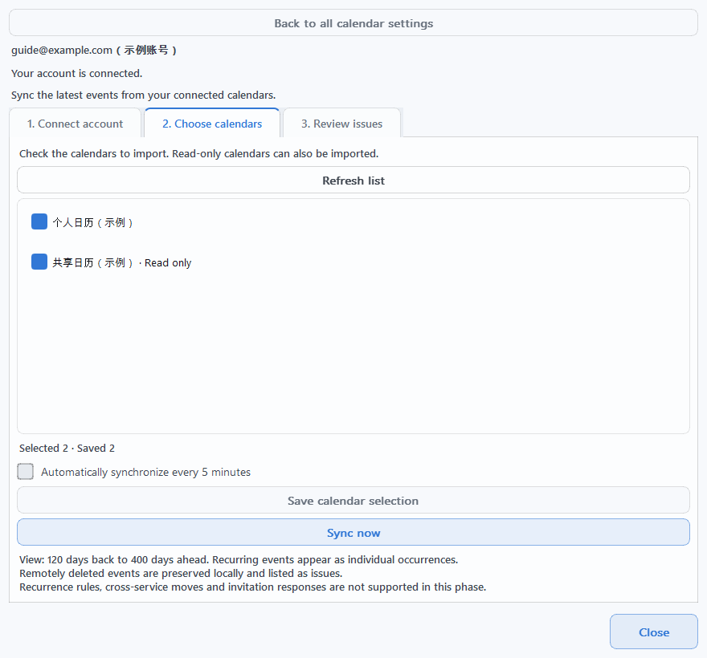
ICLOUD · CALDAV
连接 iCloud
A. 在 Apple 账户中生成应用专用密码
- 准备一个已开启双重认证的 Apple 账户。
登录 Apple 账户管理页面。
- 在“登录与安全 → App 专用密码”中创建新密码。
点击生成按钮并输入名称（例如：Air Calendar）。准备好生成的密码，以便粘贴到应用的密码框中。此连接使用应用专用密码，不是 Apple 账户的常规登录密码。
Apple 官方 App 专用密码指南。更改或重置 Apple 账户的主密码后，原有应用专用密码会被撤销，需要重新生成。
B. 在 Air Calendar 中填写邮箱和应用专用密码
- 在其他服务列表中点击“iCloud → 连接账户”。
应用会打开 连接 CalDAV 账户窗口。确认顶部的 日历服务（Calendar service） 为 iCloud，然后选择 1. 连接账户 标签页。
- 在“账户”中填写 Apple 邮箱，在“应用专用密码”中填写刚生成的密码。
服务器地址由应用自动设置。点击 验证连接并查找日历（Verify connection and find calendars），等待日历列表显示。开始连接后，密码框可能会被清空。

- 在“2. 选择日历”中勾选日历，然后点击“保存选择”。
接着点击 立即同步。如果尚未保存，可使用 保存选择并同步。仅完成登录或查看列表，并不代表日程已导入。
- 确认日程已导入，再按需开启自动同步。
如果需要，可在保存日历后勾选 每 5 分钟自动同步。可写的个人日程支持双向同步，重复日程和邀请日程请在原服务中修改。
查看 CalDAV 日历选择界面
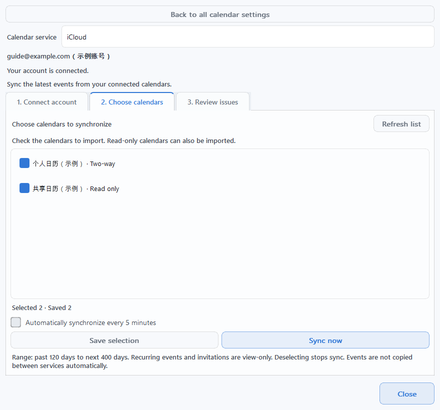
其他 CALDAV 服务
连接 Yahoo、Zoho 和 Fastmail
这三项服务使用与 iCloud 相同的 连接 CalDAV 账户窗口。在 连接与订阅 → 展开服务列表 中点击对应服务的 连接账户，也可以在 CalDAV 窗口顶部切换 日历服务。
- Yahoo Calendar
- 在 账户栏填写完整邮箱地址，在 应用专用密码栏填写 Yahoo 生成的密码。请先参阅 Yahoo 官方应用密码帮助，确认能否生成密码。不支持 Yahoo! JAPAN 账户。
- Zoho Calendar
- 先在 Zoho Calendar 的 设置 → 同步（Synchronize）→ CalDAV 中指定要同步的日历。在应用中输入完整邮箱地址和认证密码，并根据账户所在地区选择 账户数据中心服务器。开启两步验证时需要应用专用密码。Zoho 官方 CalDAV 指南
- Fastmail
- 在 Fastmail 的 Settings → Privacy & Security → Connected apps & API tokens 中进入应用密码管理，创建一个允许访问 Calendars 的应用密码。在应用中输入注册时的完整邮箱地址和此密码。Basic 套餐不支持 CalDAV 和应用密码。Fastmail 官方应用密码指南
- 填写对应服务的资料后，点击“验证连接并查找日历”。
连接失败时，可点击窗口中的 服务认证指南（Service authentication guide） 按钮，打开对应服务的官方帮助。
- 在“2. 选择日历”中勾选要使用的日历。
通过 保存选择 → 立即同步 或 保存选择并同步 导入日程，然后按需开启 每 5 分钟自动同步。
CalDAV 会导入从今天起过去 120 天至未来 400 天的日程。个人日程根据写入权限支持双向同步；只读日历、重复日程和邀请日程需在原服务中编辑。不支持将已连接的日程移至其他日历。
ICS 订阅 · 只读
通过 ICS 地址订阅日历
以只读方式导入具有订阅地址的日历，例如节假日、活动和公开日程。无需登录 Google 或 Microsoft。
- 从原服务复制 iCal / ICS 订阅地址。
在日历服务的共享或导出设置中，查找标有 iCal、ICS 或 订阅地址 的链接。它不同于浏览器地址栏中普通日历网页的地址。支持
https://、http://和webcal://地址。 - 在日历管理的“ICS 订阅”标签页中，点击“添加 ICS 订阅”。
应用会打开 通过地址订阅日历窗口。将地址粘贴到 1. 订阅地址（必填）（1. Subscription address (required)），并在 2. 日历名称（必填）（2. Calendar name (required)） 中输入容易辨认的名称，例如“团队活动”。
- 点击“添加订阅”，等待导入结果。
地址格式正确且填写名称后，按钮才会启用。地址格式有效仅表示格式检查通过，不代表已连接到服务器并接收了日程。添加订阅后，会开始首次刷新。
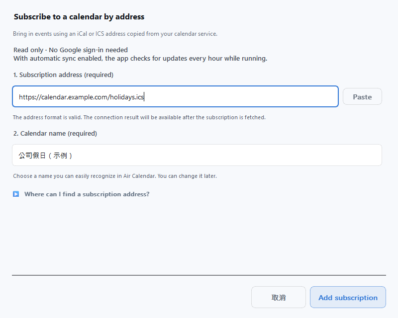
- 选中刚添加的订阅，检查“上次刷新”时间。
如果显示 尚未获取任何日程，说明首次接收尚未完成。开启 刷新此订阅（Refresh this subscription） 后，点击 立即刷新此订阅（Refresh this subscription now） 重试。若要在日历中看到日程，还需开启 在日历中显示（Show in calendar views）。
查看 ICS 订阅的显示与刷新设置界面
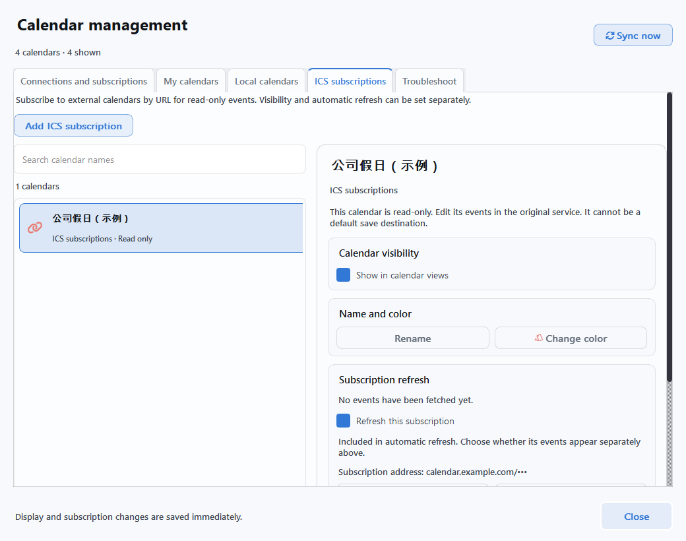
选中同一订阅，使用 修改订阅地址 → 保存更改（Save changes），即可保留名称、颜色、显示设置和已有日程。应用运行时，如果整体自动刷新和该订阅的刷新均已开启，就会每小时检查一次。原日程的添加、修改和删除需在原服务中进行。
检查结果
03. 检查同步与画面显示
- 保存所选日历后，点击“立即同步”。
日历管理中的通用按钮会一起刷新已连接的服务。也可以通过各服务的 刷新 或单独设置中的 立即同步 只检查一个服务。默认快捷键为 F5；如果已更改快捷键，请使用您指定的按键。
- 同时检查完成状态和实际日程。
检查最近同步或刷新时间以及结果消息。记住原服务中某个日程的日期和标题，然后在 Air Calendar 中转到同一天进行核对。仅登录账户成功，并不代表日程接收已完成。
- 在“我的日历”中开启显示。
选择已导入的日历，在详细信息区域开启 在日历中显示（Show in calendar views）。如果原服务有日程却看不到，请先检查此显示设置。
- 选择新日程的保存位置。
如果要在外部日历中创建新日程，请将可写的日历设为 默认保存（New event default）。只读项目无法选择。也可以在主日历的 新日程保存位置 中确认目标。
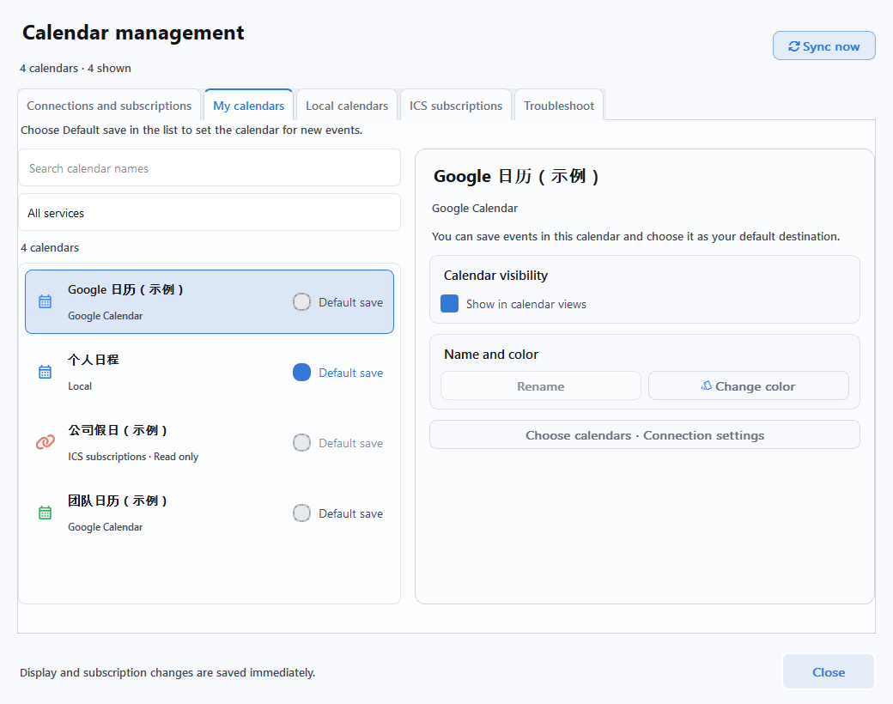
容易混淆的三项设置
- 导入 / 选择日历
- 决定从哪些日历接收原服务的变更。取消选择后，已导入的日程仍可能保留。Google 即使关闭导入，仍可能将保留下来的可编辑日程的变更发送回原服务，因此取消选择不等于断开连接。
- 在日历中显示
- 只决定是否显示在日历上。隐藏后，同步和默认保存设置仍然保留。也可以通过主界面的 显示设置 按钮更改。
- 默认保存 / 新日程保存位置
- 决定新建日程的保存目标。若要在 Google 日历中创建日程，请选择对应的 Google 日历，而不是本地日历。
如果要创建测试日程进行验证，请选择可写的日历。修改或删除该日程并同步后，原服务也会相应更新。Google 日历的名称需在 Google Calendar 中更改。
自动刷新
04. 设置自动刷新
自动同步仅在 Air Calendar 运行时生效。建议先手动同步并确认结果，再选择所需的刷新方式。账户连接与自动刷新的开启或关闭是两项独立设置。
- Google Calendar
- 在 连接设置 → 同步设置（Sync settings）→ 自动同步 Google Calendar（Automatically sync Google Calendar） 中设置。默认开启，定期同步间隔为 10 分钟，编辑后的快速同步间隔为 30 秒。更改间隔后请点击 保存设置。即使关闭自动同步，仍可手动同步。
- Outlook 与 CalDAV 服务
- 在 2. 选择日历 中保存至少一个日历后，开启 每 5 分钟自动同步。新账户默认关闭自动同步。即使自动刷新关闭，仍可手动点击 立即同步。
- ICS 订阅
- 检查整体 ICS 自动刷新开关，以及各订阅的 刷新此订阅 设置。自动刷新间隔为 1 小时。只要单个订阅的刷新已开启，即使整体自动刷新关闭，仍可使用 立即刷新此订阅。
如需快速开启或关闭，可使用 连接与订阅 中各服务卡片上的 自动刷新（Refresh automatically）。该开关会立即生效。
查看 Google 自动同步设置界面
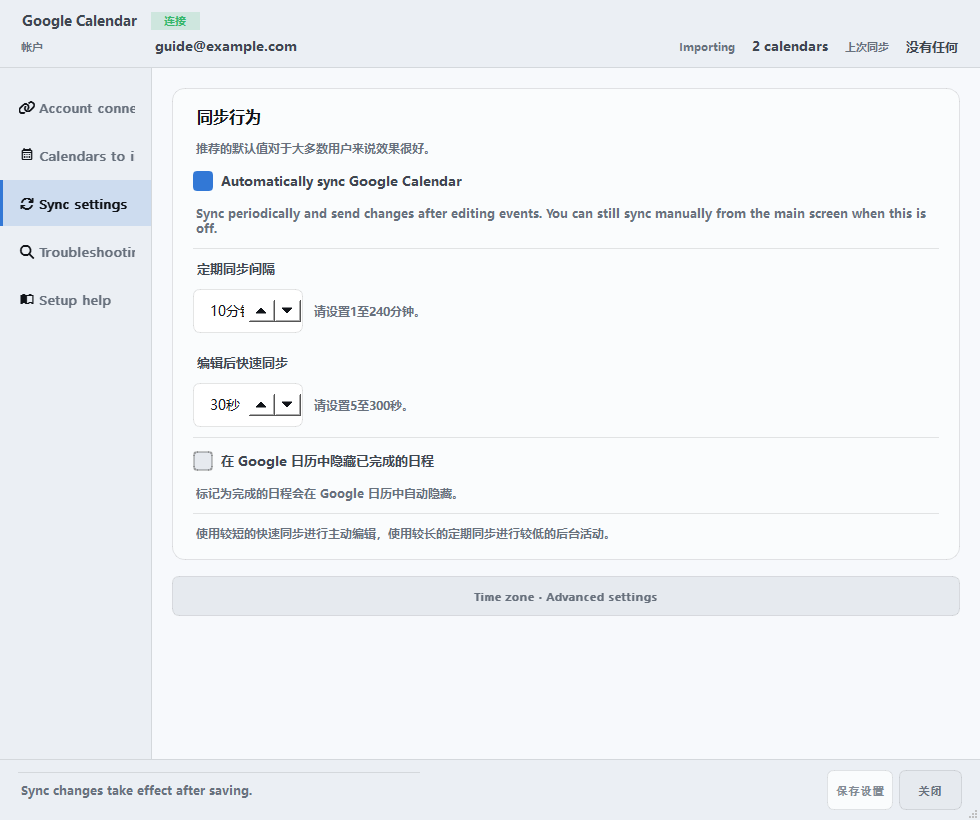
故障排查
遇到问题时
在 日历管理 → 故障排查（Troubleshoot） 中选择对应服务。界面会根据状态显示下一步操作，例如 重新连接、选择要导入的日历、检查待处理项目（Review pending items） 或 重新同步（Sync again）。
查看通用故障排查界面
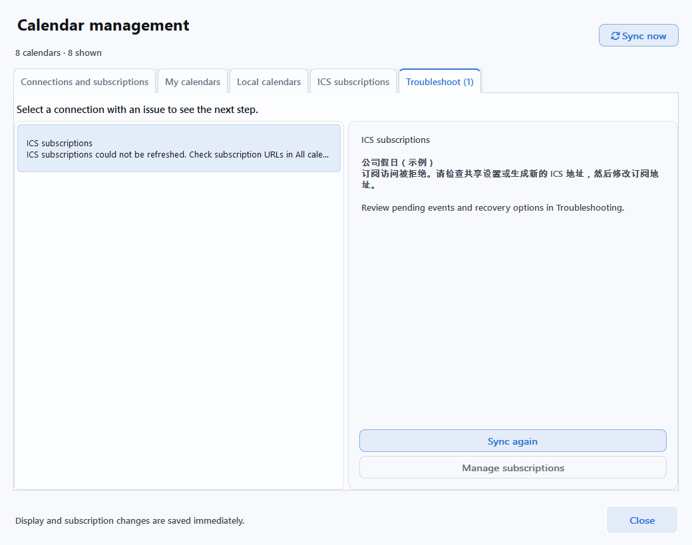
- 已登录，却看不到日程
- 依次检查：① 是否已勾选要导入的日历并保存 → ② 立即同步是否已完成 → ③ 我的日历 → 在日历中显示 是否已开启 → ④ 是否已转到原日程所在的日期。Outlook 和 CalDAV 还需确认日程位于过去 120 天至未来 400 天的范围内。
- 无法点击“立即同步”按钮
- 请先连接账户，再选择并保存至少一个日历。如果正在执行操作，请等待完成。更改选择后，按钮可能会变为 保存选择并同步。
- Google 认证失败
- 确认 JSON 属于 桌面应用类型、已启用 Calendar API，且测试用户邮箱与登录账户一致。如果授权受限，请查看 Google 界面显示的原因，并联系项目所有者或组织管理员。认证过期或权限变更时，可通过 重新连接 再次授权。
- 输入了应用专用密码，仍无法连接
- 检查服务选择、邮箱或 ID，并确认使用的是尚未撤销的新应用密码。同时检查是否更改了 Apple 主密码、Zoho 数据中心是否正确、Fastmail 套餐是否支持，以及 Naver 的账户或平台限制。可通过各窗口中的 服务认证指南 打开官方帮助。
- ICS 地址显示有效，却没有导入日程
- 格式检查与实际接收是两回事。确认使用的是订阅地址，而不是普通网页地址，并检查私人链接是否已失效。选择现有订阅，通过 修改订阅地址 → 保存更改 更新后再次刷新。
- 两边修改的日程内容不一致
- 在 Google 设置的 故障排查 → 未决问题 中比较内容，选择 保留本地版本 或 应用 Google 版本。Google 可能会保留冲突记录，并优先应用远程内容。Outlook 和 CalDAV 请查看各自设置窗口中的 3. 检查问题（3. Review issues）。
- 日程的修改或删除受到限制
- 只读日历、Naver 和 ICS 的日程需在原服务中编辑。CalDAV 的重复日程和邀请日程，以及 Outlook 的完整重复规则和邀请回复，也需在原服务中处理。
- 想停止连接
- 如果只想停止自动刷新，请关闭对应服务的自动刷新；如果要断开账户，请使用单独设置中的 断开连接（Disconnect）。ICS 使用 取消订阅（Unsubscribe）。这些操作不会删除原服务中的日程，已导入的日程也可能保留。如果还要检查或撤销服务器端的应用访问权限，请前往对应服务的账户安全设置。
请记下出问题的服务名称、点击过的按钮和错误提示，并在用户反馈区提交。上传截图或诊断报告前，请检查并遮盖邮箱、日程内容、文件路径和认证信息。